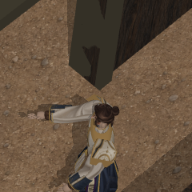
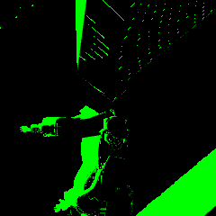

Godot shipping target; Pixi test harness. E07C remains the working chamber. All864floor/wall samples pass;436/438pilot samples pass. Full lighting/style is unqualified.
The receiver-plane correction fixes the native sleeve failures but introduces two fresh3× shoulder-armor failures. Same position repeated across factions; no numerical tolerance changed.


Each crop is240×240physical pixels, without image enlargement. The failing pixel is[120,120]within it. Black surroundings are diagnostic background.
Source texel rays explain a density limitation; a2×density prediction removes6/32probe mismatches. This requires a new GPU test. Report · Preserved E07F control